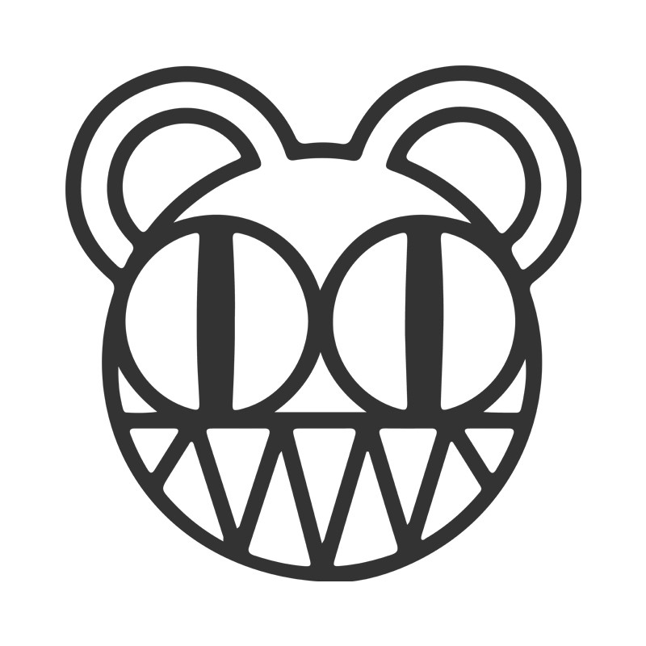
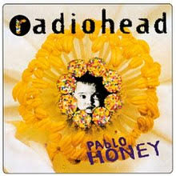
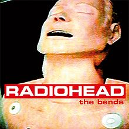
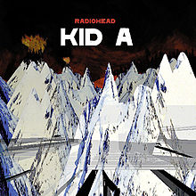
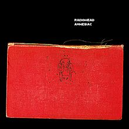
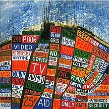
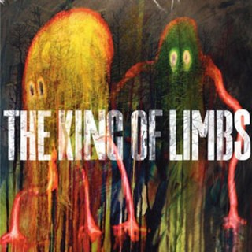
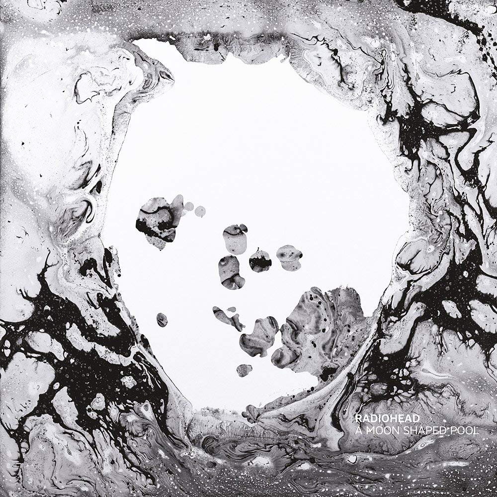

RADIOHEAD
.jpg)
.jpg)
.jpg)
.jpg)
라디오헤드 정규앨범
Pablo Honey

The Bends

OK Computer
Kid A

Amnesiac

- Hail to the thief 
- In Rainbows
- The King of Limbs 
- A Moon Shaped Pool 
라디오헤드의 정규 데뷔 앨범. 1993년 2월 22일 발표. AllMusic에는 얼터너티브 록, 브릿팝, 인디록 으로 분류되어있으며, 라디오헤드 앨범 중 유일하게 그런지 성향을 띄고 있다. 라디오헤드 중 가장 유명한 곡 중 하나인 Creep이 수록된 앨범이다. 그래서 그런지 다른 곡들은 대부분 관심이 떨어지는 편. 때문에 톰 요크가 마음고생을 했다고 한다. 다들 공연에서 Creep 말고 다른 곡은 듣지 않으려고 해서... 몇년후 The Bends로 질적으로 성숙한 앨범을 만들고 Creep = 라디오헤드라는 선입견을 떨쳐낸다. 1집이 질적 균형이 좋지 않은건 라디오헤드가 음반산업에 대해 잘 몰랐으며 프로듀서의 압력 때문이라는 이야기가 있다.
라디오헤드의 두 번째 정규 앨범. AllMusic에는 얼터너티브 록/팝, 브릿팝, 얼터너티브/인디 록 으로 분류되어있다. 1집의 그런지스러운 스타일과는 많이 다르다. Creep 한 곡만이 큰 성공을 거뒀던 기형적 구조의 1집과는 다르게 앨범에 수록된 모든 곡이 전 세계적인 히트를 기록했다. 싱글로는 "My Iron Lung","High and Dry","Fake Plastic Trees","Just","Street Spirit (Fade Out)" 5장을 팔았다. 1집이 라디오헤드의 이름을 사람들에게 알렸다면, 2집은 소포모어 징크스를 말끔히 떨쳐내고 라디오헤드의 뛰어남을 증명한 앨범이라고 볼 수 있다. OK Computer가 평론계에 호감을 샀다면 The Bends는 라디오헤드의 앨범 중 가장 영향력 있는 앨범일 것이다. 파급력에 대해 덧붙이자면 웨이브의 최민우 평론가는 "이 음반을 메이저 코드로 바꾼 뒤 창밖의 빗소리를 노래하면 트래비스(Travis)의 The Man Who가 되고 기타에 대한 세심한 고려를 뺀 자리에 키보드의 아르페지오를 바르면 뮤즈의 Origin of Symmetry 가 된다. 어쿠스틱 연주로 바꾸면 콜드플레이의 Parachutes 가 되며 뭉갠 전자음을 두텁게 바르면 엘보우의 Asleep In The Back 이, '이브닝 버전'으로 투명하게 리믹스하면 스타세일러(Starsailor)의 Love Is Here가 된다." 라고 평하기도하였다.

라디오헤드 3번째 정규 앨범. 일본에서 1997년 5월 21일 발매, 영국에서 Parlophone을 통해 6월 16일 발매, 미국에서는 Capitol Records사를 통해 7월 1일 발매했다. 라디오헤드 최고의 명반으로 손꼽힌다. 얼터너티브 락이 중심이 되고, 일렉트로니카가 이를 뒷받침 해주는 형태로 처음으로 일렉트로니카를 받아들였다. 이후 발매하는 Kid A 앨범으로 밴드의 음악성에 큰 변화를 주는 계기가 되기도 하는 앨범. 90년대 록 음악의 주요한 조류들의 특징들을 거의 모두 포함하면서 라디오헤드 특유의 색채까지 각인시킨 앨범으로, 그러한 점에서 거의 모든 매체에서 90년대를 대표하는 록 음반으로 항상 최우선으로 뽑히는 앨범이다. 음악계에 다방면으로 영향력을 끼쳤으며, 2번째 정규 앨범인 The Bends와 함께 무수히 많은 유사 라디오헤드 밴드를 양산하는데 일조했다. 핑크 플로이드의 The Dark Side of the Moon, 비틀즈의 Sgt. Pepper's Lonely Hearts Club Band와 더불어 최고의 컨셉 앨범으로 평가받는다.
라디오헤드의 정규 4번째 앨범. EMI에서 2000년 10월 2일에 발표했다. 싱글컷도 하지 않고, 뮤직비디오도 제작하지 않는 등 흥보를 거의 하지 않았다. 발매 직후에는 The Guardian으로부터 2/5점, Melody Maker로부터 1.5/5점을 받는 등 충격적인 음악적 변화에 혹평을 받기도 했다. 하지만 전세계적으로 500만 장이 넘게 팔리고, 영국과 미국에서 동시에 앨범 순위 1위를 하는 등 (미국 빌보드 차트 1등한 IDM 수록 앨범...) 비교적 큰 성공을 거둔다. OK Computer에서 시도하고자 했던 록 소리와 일렉트로니카의 조합을 보다 본격적으로 추구한 앨범으로 다양한 장르를 라디오헤드스럽게 조합하는 작법 자체는 전작과 같으나, 그 조합한 장르들이 전작과 달리 앰비언트, IDM, 크라우트록, 현대음악 등으로 생소하다는 점에서 당시 4집 앨범 듣고 충격받은 라디오헤드 팬들이 참 많았다. 덕분에 Pablo Honey나 The Bends 시절 팬들 사이에서는 호불호가 갈리는 앨범이다. 하지만 시간이 지나며 점점 좋은 평가가 대세를 이루었으며, 결과적으로는 OK Computer와 쌍벽을 이루는 당대 최고의 앨범이라는 평가를 일반적으로 받게 되었다. 물론 OK Computer는 후배 아티스트들에게 막대한 영향을 끼치고 새로운 길을 제시했다는 점에서 더 높 게 평가받는다. 그러나 라디오헤드의 '끝'을 묻는다면 단연 Kid A라고 할 수 있으며, 상대적으로 낮은 접근성과 겹쳐서 라디오헤드의 강성 팬일수록 OK Computer에 비해 Kid A를 높게 평가하는 경향이 있다.
영국 밴드 라디오헤드의 다섯 번째 앨범. EMI에서 2001년 6월 4일에 발표. (영국 기준). AllMusic 기준으로는 얼터너티브 록, 얼터너티브/인디록, 인디 일렉트로닉, 엑스페리먼트 록으로 스타일을 정리했다. 위키에서는 아트록, 일렉트로니카를 넣기도한다. KID A 처럼 클래식, 엠비언트, 일렉트로닉, 재즈가 조화를 이루고 있는 앨범이다. 라디오헤드의 전 앨범 Kid A의 연장선에 있는 앨범으로, 대부분 Kid A와 같은 몽환적인 소리를 띄고 있다. Kid A와 다르게 적극적인 마케팅을 했으며, Pyramid Song과 Knives Out의 뮤직비디오를 제작했다. Kid A보다는 기타, 드럼 등의 락적인 요소가 더 첨가되었다.
영국 밴드 라디오헤드의 6번째 정규앨범. EMI에서 2003년 6월 9일에 발표했다. 이 앨범이 라디오헤드가 EMI에서 발표한 마지막 앨범이 되었다. AllMusic 기준으로는 얼터너티브 록, 얼터너티브/인디록, 인디 일렉트로닉, 엑스페리먼트 록으로 정리되어 있다. 영어판 위키에선 출처까지 넣어서 아트록이 추가 되어있는 경우도 있다. Kid A, Amnesiac의 실험에서 돌아와 기타와 드럼 등을 많이 활용하면서 밴드적인 소리로 돌아갔다고 평가받는다. 그래서 그 전작들과는 달리 훨씬 더 듣기 편하다. 애초에 이 음반이 Kid A와 Amnesiac의 스타일을 정립한 음반이라 평가하는 이가 많다. 실제로, 라디오헤드의 음악을 듣는 매니아들 중에서 여기까지만 그들의 음악을 들은 이가 많다. 실제로, 이후 음반들은 대중적으로 소화하기 꽤나 버거워진다. 앨범의 이름은 Hail To The Thief는 이 대통령에 대한 반대 신조이다. 미국에서 대통령이 공적행사에 참석했을 때 일종의 주제가(...)로서 연주하는 Hail to the Chief라는 곡의 패러디. 참고로 이 곡 자체도 여기저기서 개그용으로 또는 패러디로 쓰이곤 하니 어지간한 사람이면 들으면 아 이 곡이라고 무릎을 치게 될 것이다(..) 링크 처음에는 톰 요크의 주장으로 곡 중 하나의 이름인 The Gloaming이 앨범 타이틀이 될 뻔했으나, 다른 Hail To The Thief가 되었다.

라디오헤드의 7번째 정규앨범 2007년 10월 10일에 라디오헤드의 레이블에서 MP3의 형태로 발표되었다. 라디오헤드 특유의 우주적이고 미래적인 소리와 높은 완성도로 평론가들의 호평을 받았다. AllMusic에서는 엑스페리먼트 록, 인디록, 얼터너티브 록으로 스타일이 분류된다. 음악적으로는 KID A와 OK Computer 사이에 있다고 볼 수 있겠으나 Hail To The Thief의 발전형으로도 볼 수 있다. 그래서 지난 음악적인 역량을 모아 한곳에 마침표를 찍듯히 깔끔하게 정돈되 있는 앨범이라 라디오헤드를 처음 접하는 이들에게 균형있는 앨범이 될것이다. 하나하나 깨알같이 휼륭하지만 weiv에서 언급했듯이 가장 완벽한 곡일지도 모르는 Reckoner는 꼭들어보길 바란다. 전세계적으로 300만장이 팔렸다. 북미에선 2008년 1월 1일날 TBD 레코드에서 판매하였다. 녹음은 제작사 나이절 고드리치와 함께 이른 2005년부터 시작하여 2년넘게 작업을 하였다. 2006년 중반부터는 3개월 동안 유럽과 북미에 공연을 하는 사이에 녹음을 하였으며 톰 요크는 이앨범은 다른 앨범보다 좀더 개인적인 곡이며 유혹하는 노래들이라고 묘사하였다. 라디오헤드는 방대한 종류의 음악적인 형식과 단지 전자 음악과 클래식 음악뿐만 아니라, 첼레스타(Celesta), 피아노, 옹드 마르트노를 사용하여 악기들과 조화를 주웠다.
영국의 록 밴드 라디오헤드의 8번째 정규 음반. AllMusic 기준에선 얼터너티브 록, 인디록, 엑스페리먼트 록이다. 위키에서는 논란이 많은지 장르분류가 없기도 하고 덥스텝, 일렉트로닉 뮤직으로 계속 바뀌기도 한다. 샘플링과 루프 앰비언트가 두드러진다. 샘플에 새소리와 바람 소리를 사용했다고한다. 필 셸웨이의 드럼과 콜린 그린우드의 리듬부분이 더 강조되었다. 그래서 드럼과 배경의 모래알같은 자글자글한 소리를 듣기위해 헤드폰을 권장하는 개인 리뷰도 있다. Los Angeles에서 녹음했는데 드루 배리모어 집에서 녹음했다는이야기가 있다. The King of Limbs라는 앨범명은 Wiltshire에 Savernake 숲의 천 년이 지난 참나무의 외관에 영향받았다. Savernake 숲은 In Rainbows곡을 녹음하던 으스스한 Tottenham Court 저택에서 3마일만 조금만 더 가면 나오는 숲이다.
영국 밴드 라디오헤드의 아홉 번째 정규 앨범. 한국 시각 2016년 5월 9일 새벽 3시에 디지털 발매되었다. CD와 LP는 6월 17일 릴리즈되었다. 앨범 발매는 XL Recordings에서 담당했다. 이번 앨범은 바로 지난 앨범과는 달리 공식적으로 싱글을 발매하고 뮤직 비디오를 만드는 등 적극적으로 홍보 활동을 했으며, 국내에서 음원 배급 문제로 골머리를 앓았던 7, 8집과는 달리 음원 유통도 원활한 편이었다. 앨범 커버는 나이젤 고드리치와 마찬가지로 라디오헤드와 항상 함께 해 온 스탠리 돈우드가 제작했다. 프로듀싱은 라디오헤드의 영원한 동반자라고 할 수 있는 Nigel Godrich와 라디오헤드 본인들이 직접 맡았다. 앨범이 발매되자마자 BBC Radio 6에서 톰 로빈슨에 의해 전곡이 스트리밍 방송되었다. 앨범마다 저마다의 색채를 띠는 라디오헤드답게 역시나 전작과는 다른 지향점을 보였다. 일렉트로닉 대신 챔버팝적 요소가 대폭 증가되었는데 덕분에 현대음악의 영향을 받은 조니 그린우드의 실험적인 편곡이 꽤나 돋보였다. 전체적으로 현악기가 두드러지며 9곡을 오케스트라와 합창단을 기용했다고 한다. 한편으로 전작에 비해 대중성 있는 기타 편곡이 두드러지는데 이는 에드 오브라이언의 공이 컸다